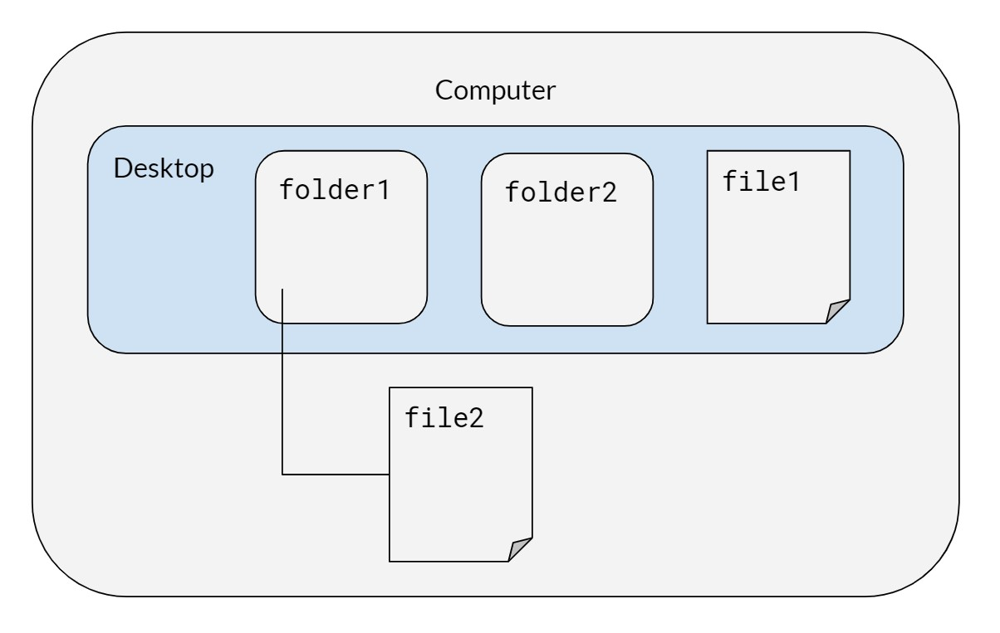

Chapter 13 Unix commands
by Stephanie Djajadi, Kunal Mishra, Anna Nguyen, and Jade Benjamin-Chung
We typically use Unix commands in Terminal (for Mac users) or Git Bash (for Windows users) to
- Run a series of scripts in parallel or in a specific order to reproduce our work
- To check on the progress of a batch of jobs
- To use git and push to github
13.1 Basics
On the computer, there is a desktop with two folders, folder1 and folder2, and a file called file1. Inside folder1, we have a file called file2. Mac users can run these commands on their terminal; it is recommended that Windows users use Git Bash, not Windows PowerShell.

13.2 Syntax for both Mac/Windows
When typing in directories or file names, quotes are necessary if the name includes spaces.
| Command | Description |
|---|---|
cd desktop/folder1 |
Change directory to folder1 |
pwd |
Print working directory |
ls |
List files in the directory |
cp "file2" "newfile2" |
Copy file (remember to include file extensions when typing in file names like .pdf or .R) |
mv “newfile2” “file3” |
Rename newfile2 to file3 |
cd .. |
Go to parent of the working directory (in this case, desktop) |
mv “file1” folder2 |
Move file1 to folder2 |
mkdir folder3 |
Make a new folder in folder2 |
rm <filename> |
Remove files |
rm -rf folder3 |
Remove directories (-r will attempt to remove the directory recursively, -rf will force removal of the directory) |
clear |
Clear terminal screen of all previous commands |

13.3 Running Bash Scripts
| Windows | Mac / Linux | Description |
|---|---|---|
chmod +750 <filename.sh> |
chmod +x <filename.sh> |
Change access permissions for a file (only needs to be done once) |
./<filename.sh> |
./<filename.sh> |
Run file (./ to run any executable file) |
bash bash_script_name.sh & |
bash bash_script_name.sh & |
Run shell script in the background |
13.4 Running Rscripts in Windows
Note: This code seems to work only with Windows Command Prompt, not with Git Bash.
When R is installed, it comes with a utility called Rscript. This allows you to run R commands from the command line. If Rscript is in your PATH, then typing Rscript into the command line, and pressing enter, will not error. Otherwise, to use Rscript, you will either need to add it to your PATH (as an environment variable), or append the full directory of the location of Rscript on your machine. To find the full directory, search for where R is installed your computer. For instance, it may be something like below (this will vary depending on what version of R you have installed):
C:\Program Files\R\R-3.6.0\bin
For appending the PATH variable, please view this link. I strongly recommend completing this option.
If you add the PATH as an environment variable, then you can run this line of code to test:
Rscript -e “cat(‘this is a test’)", where the -e flag refers to the expression that will be executed.
If you do not add the PATH as an environment variable, then you can run this line of code to replicate the results from above:
“C:\Program Files\R\R-3.6.0\bin” -e “cat(‘this is a test’)”
To run an R script from the command line, we can say:
Rscript -e “source(‘C:/path/to/script/some_code.R’)”
13.5 Checking tasks and killing jobs
| Windows | Mac / Linux | Description |
|---|---|---|
tasklist |
ps -v |
List all processes on the command line |
top -o [cpu/rsize] |
List all running processes, sorted by CPU or memory usage | |
taskkill /F /PID pid_number |
kill <PID_number> |
Kill a process by its process ID |
taskkill /IM "process name" /F |
Kill a process by its name | |
start /b program.exe |
Runs jobs in the background (exclude /b if you want the program to run in a new console) |
|
nohup |
Prevents jobs from stopping | |
disown |
Keeps jobs running in the background even if you close R | |
taskkill /? |
Help, lists out other commands |
To kill a task in Windows, you can also go to Task Manager > More details > Select your desired app > Click on End Task.
13.6 Running big jobs
For big data workflows, the concept of “backgrounding” a bash script allows you to start a “job” (i.e. run the script) and leave it overnight to run. At the top level, a bash script (0-run-project.sh) that simply calls the directory-level bash scripts (i.e. 0-prep-data.sh, 0-run-analysis.sh, 0-run-figures.sh, etc.) is a powerful tool to rerun every script in your project. See the included example bash scripts for more details.
- Running Bash Scripts in Background: Running a long bash script is not trivial. Normally you would run a bash script by opening a terminal and typing something like
./run-project.sh. But what if you leave your computer, log out of your server, or close the terminal? Normally, the bash script will exit and fail to complete. To run it in background, type./run-project.sh &; disown. You can see the job running (and CPU utilization) with the commandtoporps -vand check your memory withfree -h.
Alternatively, to keep code running in the background even when an SSH connection is broken, you can use tmux. In terminal or gitbash follow the steps below. This site has useful tips on using tmux.
# create a new tmux session called session_name
tmux new -ssession_name
# run your job of interest
R CMD BATCH myjob.R &
# check that it is running
ps -v
# to exit the tmux session (Mac)
ctrl + b
d
# to reopen the tmux session to kill the job or
# start another job
tmux attach -tsession_name Deleting Previously Computed Results: One helpful lesson we’ve learned is that your bash scripts should remove previous results (computed and saved by scripts run at a previous time) so that you never mix results from one run with a previous run. This can happen when an R script errors out before saving its result, and can be difficult to catch because your previously saved result exists (leading you to believe everything ran correctly).
Ensuring Things Ran Correctly: You should check the
.Routfiles generated by the R scripts run by your bash scripts for errors once things are run. A utility file is include in this repository, calledrunFileSaveLogs, and is used by the example bash scripts to… run files and save the generated logs. It is an awesome utility and one I definitely recommend using. Before usingrunFileSaveLogs, it is necessary to put the file in the home working directory. For help and documentation, you can use the command./runFileSaveLogs -h. See example code and example usage forrunFileSaveLogsbelow.
13.6.1 Example code for runfileSaveLogs
#!/usr/bin/env python3
# Type "./runFileSaveLogs -h" for help
import os
import sys
import argparse
import getpass
import datetime
import shutil
import glob
import pathlib
# Setting working directory to this script's current directory
os.chdir(os.path.dirname(os.path.abspath(__file__)))
# Setting up argument parser
parser = argparse.ArgumentParser(description='Runs the argument R script(s) - in parallel if specified - and moves the subsequent generated .Rout log files to a timestamped directory.')
# Function ensuring that the file is valid
def is_valid_file(parser, arg):
if not os.path.exists(arg):
parser.error("The file %s does not exist!" % arg)
else:
return arg
# Function ensuring that the directory is valid
def is_valid_directory(parser, arg):
if not os.path.isdir(arg):
parser.error("The specified path (%s) is not a directory!" % arg)
else:
return arg
# Additional arguments that can be added when running runFileSaveLogs
parser.add_argument('-p', '--parallel', action='store_true', help="Runs the argument R scripts in parallel if specified")
parser.add_argument("-i", "--identifier", help="Adds an identifier to the directory name where this is saved")
parser.add_argument('filenames', nargs='+', type=lambda x: is_valid_file(parser, x))
args = parser.parse_args()
args_dict = vars(args)
print(args_dict)
# Run given R Scripts
for filename in args_dict["filenames"]:
system_call = "R CMD BATCH" + " " + filename
if args_dict["parallel"]:
system_call = "nohup" + " " + system_call + " &"
os.system(system_call)
# Create the directory (and any parents) of the log files
currentUser = getpass.getuser()
currentTime = datetime.datetime.now().strftime("%Y-%m-%d %H:%M:%S")
logDirPrefix = "/home/kaiserData/logs/" # Change to the directory where the logs should be saved
logDir = logDirPrefix + currentTime + "-" + currentUser
# If specified, adds the identifier to the filename of the log
if args.identifier is not None:
logDir += "-" + args.identifier
logDir += "/"
pathlib.Path(logDir).mkdir(parents=True, exist_ok=True)
# Find and move all logs to this new directory
currentLogPaths = glob.glob('./*.Rout')
for currentLogPath in currentLogPaths:
filename = currentLogPath.split("/")[-1]
shutil.move(currentLogPath, logDir + filename)13.6.2 Example usage for runfileSaveLogs
This example bash script runs files and generates logs for five scripts in the kaiserflu/3-figures folder. Note that the -i flag is used as an identifier to add figures to the filename of each log.
#!/bin/bash
# Copy utility run script into this folder for concision in call
cp ~/kaiserflu/runFileSaveLogs ~/kaiserflu/3-figures/
# Run folder scripts and produce output
cd ~/kaiserflu/3-figures/
./runFileSaveLogs -i "figures" \
fig-mean-season-age.R \
fig-monthly-rate.R \
fig-point-estimates-combined.R \
fig-point-estimates.R \
fig-weekly-rate.R
# Remove copied utility run script
rm runFileSaveLogs